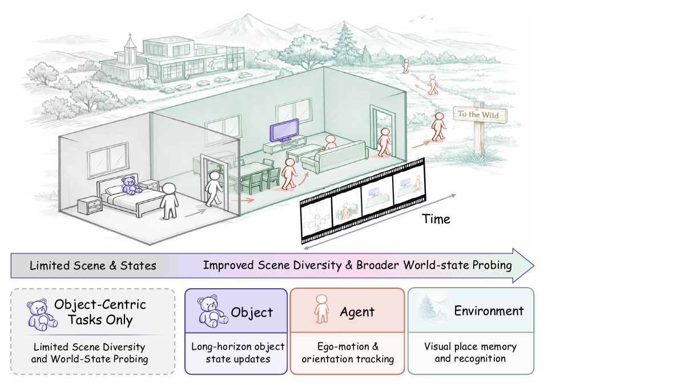
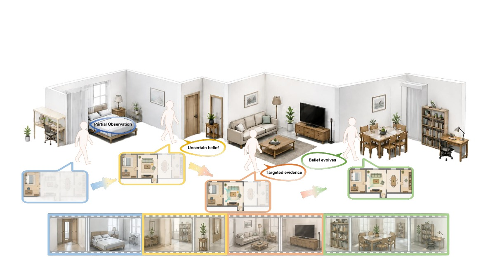
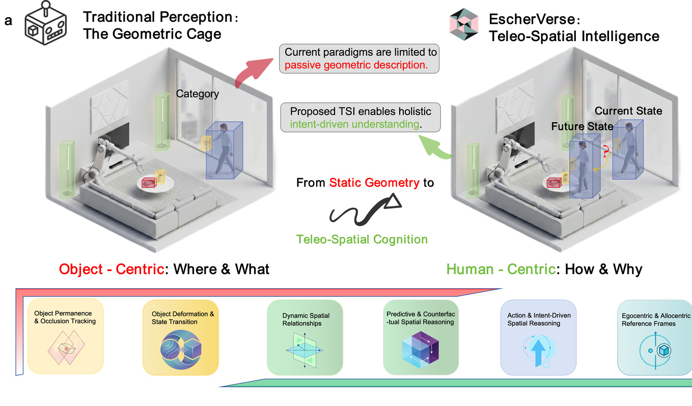
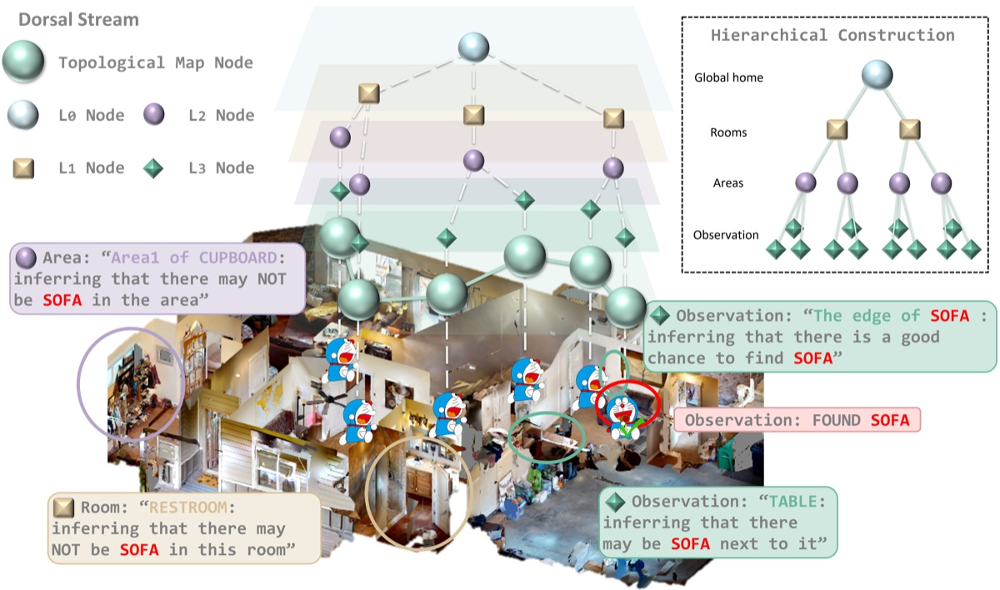

ECCV 2026 · Accepted
Towards Spatial Supersensing in the Wild
A long-form benchmark for continual agent-object-environment world-state reasoning across 442 videos and 284.52 hours.
M.S. Student · Spatial Intelligence
I study how multimodal agents perceive, remember, and reason about spatially and dynamically evolving worlds.
I am a master's student at East China Normal University, advised by Prof. Lizhuang Ma and Prof. Xin Tan. I am currently a visiting research intern with the NYU AI4CE Lab and Tsinghua University Spatial Intelligence Lab.
My research focuses on spatial intelligence, long-form video understanding, world models, and embodied AI, with an emphasis on structured spatial reasoning, memory, and reliable decision-making in open-world environments.
News
Started visiting research at NYU's Center for Robotics and Embodied Intelligence, working with Prof. Chen Feng and the AI4CE Lab.
Towards Spatial Supersensing in the Wild was accepted to ECCV 2026.
Joined Meituan's Infrastructure R&D Platform / M17 as a Foundation Model Research Intern.
Joined Tsinghua University Spatial Intelligence Lab as a visiting research intern.
Research
Representative work in spatial reasoning, video understanding, and embodied intelligence. * denotes equal contribution.

ECCV 2026 · Accepted
A long-form benchmark for continual agent-object-environment world-state reasoning across 442 videos and 284.52 hours.

Under Review
Manuscript available upon request.

Nature Communications · Revision
EscherVerse evaluates physical dynamics and human-intent reasoning over 11,328 real-world videos.

Visual Intelligence · 3:27
Yizhang Jin*, Jian Li*, Tianjun Gu*, Yexin Liu, Bo Zhao, Jinxiang Lai, Zhenye Gan, Yabiao Wang, Chengjie Wang, Xin Tan, Lizhuang Ma
ICCV 2025
Sen Wang, Shao Zeng, Tianjun Gu, Zhizhong Zhang, Ruixin Zhang, Shouhong Ding, Jingyun Zhang, Jun Wang, Xin Tan, Yuan Xie, Lizhuang Ma
Journal of Graphics · 45(1):102
Tianjun Gu, Suya Xiong, Xiao Lin
Experience
Research remains the main thread, supported by experience in foundation-model training, data engines, and deployed vision systems.
NYU Center for Robotics and Embodied Intelligence (CREO) · AI4CE Lab
Advisor: Chen Feng · NYU Tandon School of Engineering
Tsinghua University Spatial Intelligence Lab · Beijing, China
Advisor: Yiming Li
East China Normal University · Shanghai, China
Advisors: Lizhuang Ma and Xin Tan
Meituan · Infrastructure R&D Platform / M17 · Shanghai, China
Tencent Youtu Lab · Shanghai, China
Baidu · MEG / Library Strategy Group · Shanghai, China
SAIC Anji Intelligent IoT Technology Co., Ltd. · Shanghai, China
Education
M.S. · GPA 91/100 (3.8/4.0) · Rank 1 in cohort
Advisors: Lizhuang Ma and Xin Tan · Shanghai, China
B.S. · GPA 92/100 (3.9/4.0)
Shanghai, China
Academic service
NeurIPS · ECCV
CCF CAD/CG
Honors and awards
Technical skills
Contact
I am preparing for Fall 2027 PhD applications and remain open to research collaborations and aligned research internships.
TianjunGu_Grady@outlook.com